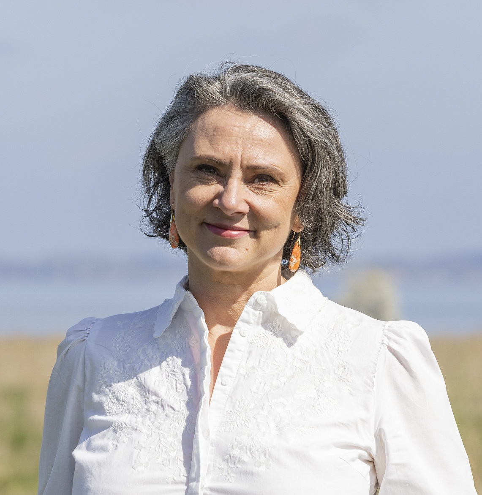

Terapi · Coaching · Foredrag
Har du lyst til at leve et liv, hvor der er sammenhæng mellem din krop, din psyke og din ånd? Her kan du både finde ledersparring, individuel terapi, parterapi og workshops, der støtter dig i at stå stærkt, handlekraftig og autentisk. Jeg hedder Rebekka, og har mere end 15 års professionel erfaring med at omdanne livets svære udfordringer til erfaringer, der bringer indsigt, livsmod, styrke og fornyet energi. Hvis du er i en forandringsproces og har brug for hjælp, eller du oplever, at det er svært at tage ejerskab og ansvar for dit liv uden at blive overvældet, så læs videre her på siden.

Konceptet "Det tredje lag” opstod helt spontant en dejlig sommeraften. Min søn, som på det tidspunkt var 12 år, og jeg boede ned til vandet, og vi var lige gået ned for at aftenbade. Mens vi stod ude i vandet og så solen gå ned i horisonten, sagde han: "Mor, jeg bliver så glad i mit tredje lag”. Jeg spurgte, hvad hans tredje lag var, og han kiggede på mig, som om det var det mest indlysende i hele verden og svarede: “Mit første lag er kroppen, mit andet lag er følelserne, og mit tredje lag er det, der bliver glad, når solens stråler rammer vandet”.
Det er virkelig svært at finde ord, der definerer Det tredje lag præcist, men alle, der hører anekdoten, smiler og genkender fuldstændig hans oplevelse i dem selv. I dag er Det tredje lag blevet et udtryk, som jeg har arbejdet med i årevis. Det dækker på smukkeste vis over noget udefinerbart, der stikker dybere end det fysiske og følelsesmæssige.
Der er mange ord for det, min søn kaldte ”Det tredje lag”. De fleste vil måske bruge ordet sjæl, men du er velkommen til at sætte det ord ind, som giver mest mening for dig. Jeg har ikke selv et fast defineret teologisk synspunkt, så det er helt bevidst, at jeg bygger både min virksomhed og min praksis på noget jordnært og samtidig metaforisk, som alle kan genkende.
Når vi oplever vores tredje lag, er det ofte en ordløs erfaring, men vi kender følelsen af forbundethed, indre ro og nærvær. Vi er alle præget af vores ego, vores historie og vores personlige erfaringer i mødet med Det tredje lag, alligevel er oplevelsen af ånd meget ens, når vi hver især mærker den. Min oplevelse er, at kraften i sig selv, når man er helt nærværende i sit tredje lag, føles som kærlighed. Her er der ingen dom eller krav.
Flow er naturligt i Det tredje lag, og det er min erfaring, at vi kan opnå den følelse både med og uden aktiv handling. Flow kan opstå spontant, mens vi sidder i bilen og hører musik og skråler i vilden sky, uden at vi aktivt har gjort noget for at få det godt. Men vi kan også føle flow i bevidste aktive handlinger, f.eks. i meditation. Det gælder for os alle sammen, at jo mere vi jagter vores tredje lag, jo sværere er det at mærke. Alligevel er der aktive skridt vi kan gøre for at træne vores evne til at opnå nærvær og flow. Læs mere om det i fanen terapi.
Til dem, der gerne vil have klare definitioner og synes, at det hele er noget fluffy noget, vil jeg sige, at ja — det er fluff. Sådan er det med begreber. Vi forstår dem godt, men kan alligevel ikke fuldstændig præcist definere, hvad de indebærer. Tænk bare på begreber som kærlighed eller venskab.
Med forbehold kommer her et bud på en definition: Det tredje lag er menneskets sjælelige kerne og forbindelsesled til en universel livskraft. Det er en tilstand af ren bevidsthed og "flow", der ligger bag kroppens fysiske sansninger og sindets følelsesmæssige svingninger.
Sådan opleves Det tredje lagDet, der føles sandt og dybt, når vi slipper analysen.
Det sted, hvor vi trygt og i tillid lader livet flyde frit.
Et domsfrit rum, hvor vi er hele — uanset hvad vi ellers bærer rundt på.